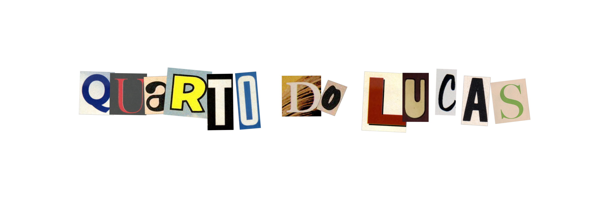

🌐 QUARTO DO LUCAS
_
□
✕
🌐 QUARTO DO LUCAS
+
◀
▶
🔄
➜
🔍
Arquivo
Editar
Exibir
Favoritos
Ferramentas
Ajuda
Links »
🏠
⭐
🖨️
✉️
💬

INÍCIO
Perfil
Àlbuns
Redes Sociais
Diário
Sobre mim.
Photodump.
Projetos.
Playlist.
...
...